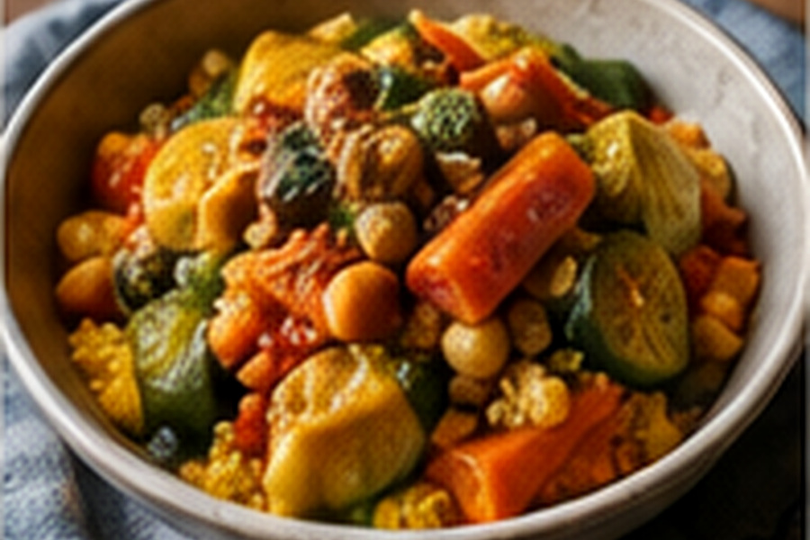

Amazigh / North Africa
Amazigh Vegetable Couscous
Fluffy couscous with chickpeas, vegetables and aromatic broth.

About this dish
Couscous is foundational across the Maghreb and appears in many Amazigh food traditions. This home version emphasizes separate grains and vegetables cooked until tender but intact.
Ingredients & step-by-step method
Ingredients
- 2 cups couscous
- 2 tbsp olive oil
- 1 onion
- 2 carrots
- 1 zucchini
- 1 turnip
- 1 can chickpeas
- 2 tomatoes
- 4 cups vegetable stock
- 1 tsp turmeric
- 1 tsp ginger
- 1/2 tsp cinnamon
- Salt, pepper and herbs
Method
- Soften sliced onion in olive oil for 5 minutes.
- Add turmeric, ginger and cinnamon; stir 30 seconds.
- Add tomatoes, carrots, turnip, chickpeas and stock. Simmer covered 20 minutes.
- Add zucchini and simmer 10–12 minutes until vegetables are tender.
- Put couscous in a bowl with salt and oil. Pour over 2 cups hot broth, cover 5 minutes, then fluff thoroughly.
- Mound couscous on a platter, arrange vegetables on top and ladle broth around the grains.